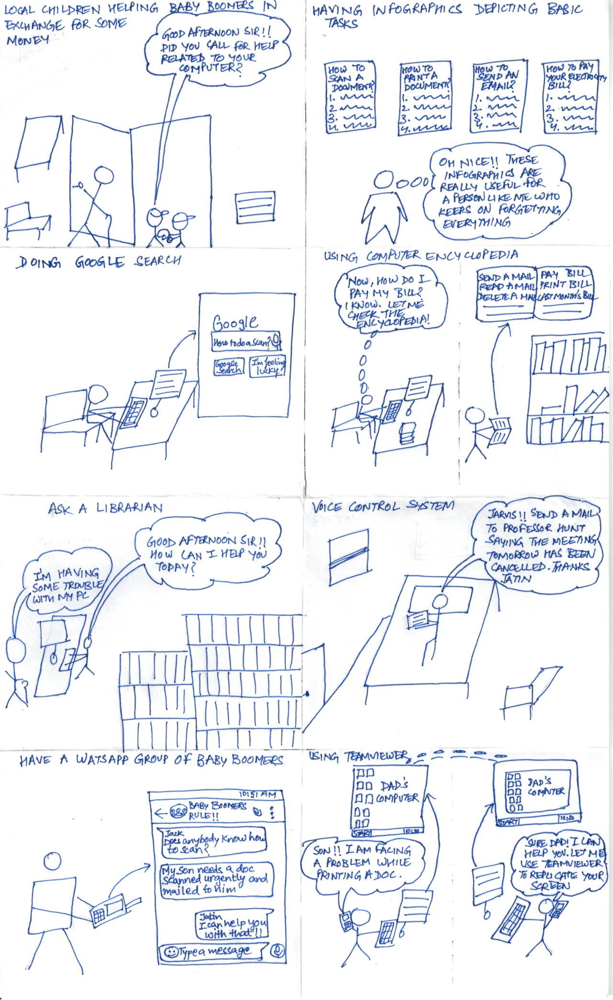
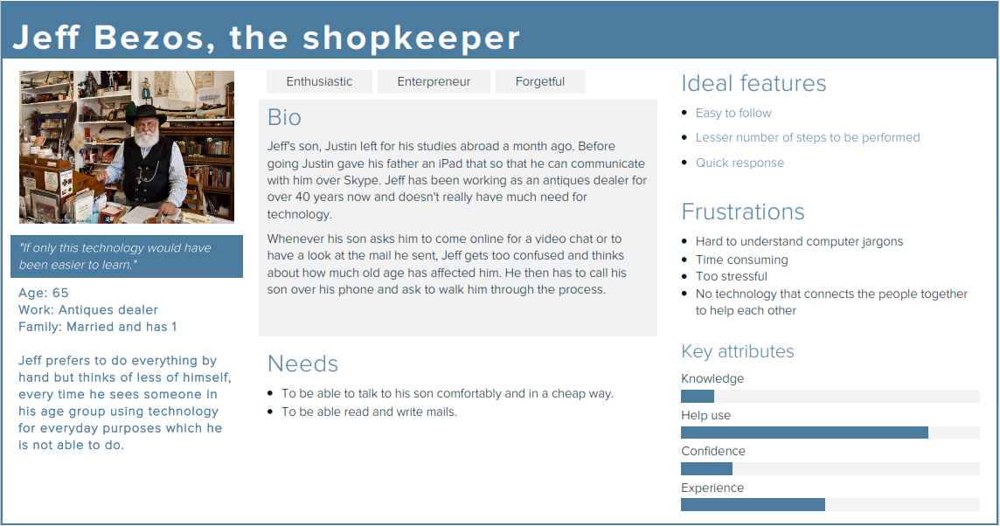
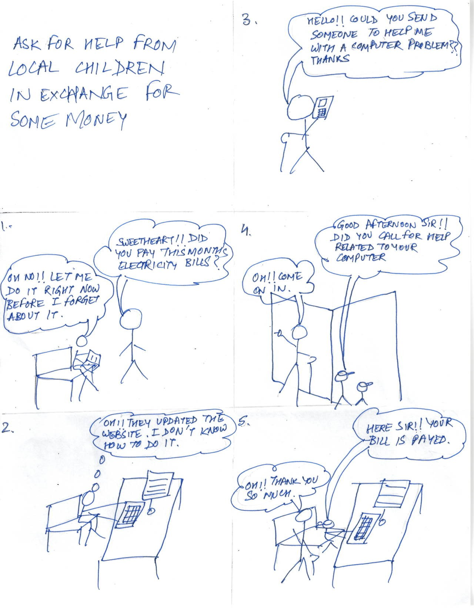
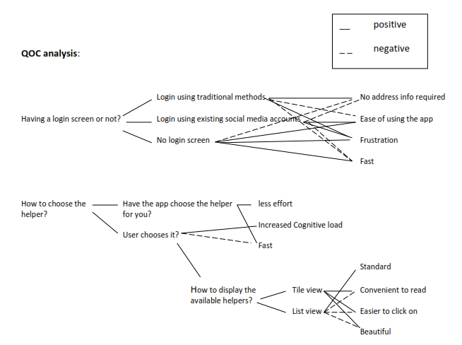
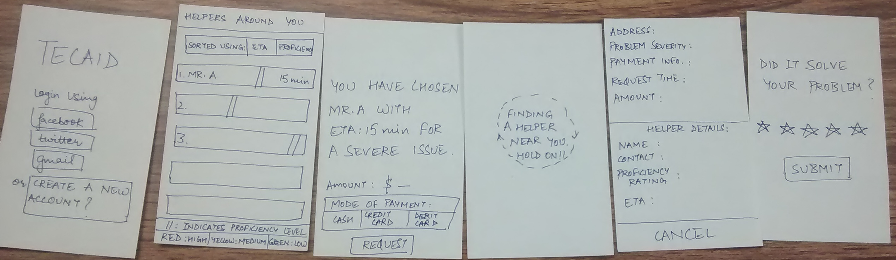

INTERACTION DESIGNER: TECAID - Play with the prototype
Overview |
Conceptualized and designed an app Tecaid, which helps baby boomers request for timely technical assistance from local neighbourhood high school students looking for community service credit |
Process in brief |
Conducted in person user interviews, brainstormed ideas through sketches, created personas using Xtensio and digital/paper prototypes using Axure, Invision and Figma |
Design Process |
|
|
As I started solving this problem of inaccessibility of technology for baby boomers, I wanted to make baby boomers independent and self-reliant by showing them tutorials or through screenshots or by the use of narrative. While sketching ideas for solving this problem, I came up with many solutions.  While I was brainstorming with two of my peers, the idea about asking a librarian stuck to us the most as it is free and essentially the work gets delegated to someone else.
Teaching google search idea came off as something which was very hard to implement but which can have very high impact, taking into consideration the assumption that google wont change its interface and become inaccessible. Using Teamviewer to help solve the problem had problems such as what happens when the issue is with connection of physical devices and also it did not offer complete independence for the baby boomer as the child would still have to be present to act as a tech support. Here is a persona I developed.  From the interviews I conducted with baby boomers, two things surfaced. Use of watsApp to connect the baby boomers was not encouraged a lot as it was very much dependent on demographics and in US, watsApp is not even used that much. Secondly, the population in this range wants to get their work done as quickly and as much without frustration as possible and they like to ask for help. For this they consider, library as one of the best resource. One more thing that came through the interview was regarding my solution of connecting baby boomers to the local primary school children. One of the interviewees suggested that there would be a security issue with the primary school children, so why not consider high school children looking for community service credit. Thus I shifted my focus to connecting baby boomers to high school children as by the above reasoning, the high school students would have much more motivation to help and also the security issue is somewhat eliminated. Keeping this scenario in mind, I decided to work on an app that helps baby boomers request for timely technical assistance from high school students in the neighborhood looking for community service credit.  Having a somewhat well framed problem, I started conducting the QOC (Questions, Options and criterion) analysis for the features I would be putting in the app.  It was hard as I had to keep it very simple and intuitive at the same time. I had to think about readability, clickability, payment modes and not making my user more conscious than he is already is. Thus I came up with 3 prototypes implementing different ways to choose helpers, to on-board people to the app, for inputting the problem, for logging into the app, for entering location and for giving feedback for the help received. One of them is shown below.  But as you can see, choosing so many things is still a very high cognitive load for the baby boomers and thus it tends to repel them away from using the app. Thus, I decided to make the app do most of the things like choosing the helper, getting location using GPS and only asking the user about how urgent the problem and in how much time they would like the helper to arrive rather than inputting the complete problem. For login, I decided to use the social media accounts of the baby boomers and once they have logged in, they would not be asked to login again. In regards to giving feedback, I gave the user ability to give or not to give the feedback. Some other important details that I took into consideration while designing the app were having not more than 3 buttons on a screen, having circular buttons to increase clickability and readability, paying particular attention to navigation i.e. to say giving the user the ability to go back and correct any mistakes or any discourse they might have taken while going through the process. Here is the final digital prototype that I ended up with. As I started creating a digital prototype for my app, a lot of minor things like where to put a particular icon, how to ask the question from the user in a clear language, where to show the popups, which font and font-weight to use, where to navigate to from a particular screen, where to show the error, which color combination to use that is the right contrast, crept up. As I kept on reiterating, the feedback kept on becoming more and more emotional as in how the user might feel when using the app. That is when I decided to stop reiterating and let the actual users decide the outcome of the app and whether I have been successful in making technology less intimidating for them or not. Final digital prototype: |
|